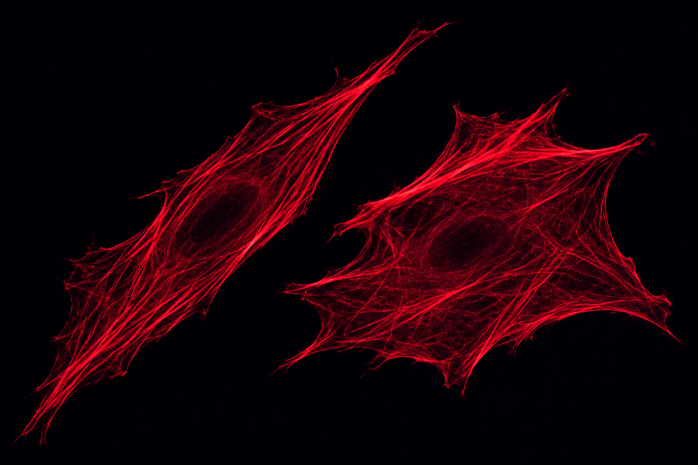

既往研究基础
查看相关论文
细胞与组织修复
Cells & Tissue Repair
既往研究围绕细胞功能、细胞外基质与血管化，探索细胞在脂肪移植和组织修复中的作用。
研究内容与问题
细胞如何参与修复
关注干细胞在血管化、移植物存留和组织再生中的作用，理解细胞功能与修复效果的联系。
哪些细胞功能能够支持更有效的组织修复？
从细胞到细胞与材料协同
在细胞研究基础上，进一步关注细胞外基质与材料提供的局部环境，探索支持细胞发挥作用的策略。
如何让细胞的修复潜能转化为更稳定的修复效果？